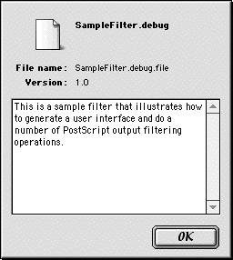

|
|
LaserWriter 8 version 8.7 introduces the concept of PostScript output filters and their use during printing. PostScript output filters are code fragments that live in the data fork of files that reside within the "Printing Plug-ins" folder contained in the Extensions folder. These code fragments can intercept the PostScript output data stream generated by LaserWriter 8 and add, remove, or modify the data before it is transmitted to the output device. Through this type of modification, a PostScript output filter can implement customized control of features for a specific printer model or can implement new user features across a range of PostScript printers without requiring changes to LaserWriter 8. The remainder of this document refers to PostScript output filters as "filters" or "plug-ins."
In addition to filtering the PostScript output data stream, a filter can also present a user interface in the LaserWriter 8 Print Dialog for configuring the filter's print job parameters. The filter's user interface can consist of one or more panels with functionality similar to the built-in panels already present, including the ability to save different settings for each printer.
Updated: [Oct 5 1999]
|
Organization
This document is organized into several major sections. The section Filter Basics discusses how filters work with LaserWriter 8. This includes discussion of the user interface for enabling and manipulating filters, information about the operation of a filter when it filters the PostScript output data, and what the user interface for a specific filter might look like.
The section Filter Output APIs discusses the filter routines that are called by LaserWriter 8 and PrintingLib as part of the generation of the PostScript language output. All filters implement at least one required routine; otherwise, the filter serves no useful purpose and is not given an opportunity to filter output.
The section User Interface APIs discusses the filter routines that LaserWriter 8 calls as the user interacts with the Print Dialog.
The section Sample Code discusses the two sample filters provided as part of this technote.
Appendix A: PSPosition Data Details provides detailed information about how the PostScript output data that filters receive is tagged.
Back to top
Filter Basics
Basic User Interaction
Users install filters in MacOS 8.5 and later by dragging them onto the System Folder. The file is autorouted to the "Printing Plug-ins" folder in the "Extensions" folder. When one or more filters is installed, the LaserWriter 8.7 Print Dialog adds a new panel titled "Plug-In Preferences" which displays all of the PostScript output filters contained in the "Printing Plug-ins" folder (see Figure 1 for an example). As with all of the LaserWriter 8 settings in the Print Dialog, the settings in this panel are saved on a printer-by-printer basis.
Figure 1 - The Plug-In Preferences Panel
Users can enable or disable each filter using the checkbox associated with that filter. By default, all filters are disabled for each printer. In addition to enabling and disabling each filter individually, users can disable all filters by unchecking the top-most checkbox labeled Print Time Filters. When this box is unchecked, all filter controls become inactive. Checking this box enables the controls for the filters but does not alter their on/off state. Each filter also has an information button, which brings up a modal dialog displaying filter version information and a textual description of the filter. The order of the filters in this panel can be altered by dragging the "gripper" at the left of the filter name. Filters execute in the order they are listed in this panel. The meaning of this order is described in the next section.
The set of active filters and the ordering of the filters affect the current print job. The user can save this set and order using the Save Settings button on the dialog. Doing this saves the set and order for the currently chosen desktop printer.
Filter UI Basics
A filter can have a user interface in the Print Dialog for controlling its settings. Once the filter is enabled in the Plug-In Preferences panel, LaserWriter 8 calls the exported routines, which control the filter's user interface. The filter can examine the conditions it is running under and determine whether LaserWriter 8 should display its user interface. A given filter can specify that its user interface be displayed in one or more panels.
The names in the panels menu are listed in three sections. The first section lists those panels which are built into LaserWriter 8. This is followed by a section of panels which correspond to printer-specific features for the current printer as specified by the PostScript Printer Description (PPD) file. The last section of the menu consists of any panels added by PostScript output filters. A given filter can add zero or more panels.
Figure 2 is a screen shot of the LaserWriter 8.7 Print Dialog with an output filter enabled that has one custom panel whose menu is titled "Sample Filter Settings." The menu item "Imaging Options" corresponds to a panel generated for the PostScript Printer Description (PPD) file for the current printer.
Figure 2 - The Print Dialog Panels Menu
Selecting the menu item corresponding to a filter's panel displays that panel. A simple example of a filter's panel is shown in Figure 3. A filter has control over the layout and look of the contents of the panel within the area between the panel popup menu and the line above the buttons at the bottom of the dialog. The filter handles the user interaction with its controls and saves its configuration into the print job data that is passed to it when it is filtering PostScript data. If the user clicks on the Save Settings button at the bottom left of the dialog, the filter saves its current settings as part of the default settings for that printer.
Details of the User Interface portion of the API for filters can be found in the section User Interface APIs below.
Figure 3 - A Sample Filter Panel
Back to top
Filter Output APIs
This section describes the filter APIs that are called at the time a communication channel with a PostScript output device is established and during the emission of the PostScript data into the communication channel. This is the point where a filter plug-in actually has the chance to filter the PostScript output data. This portion of the API consists of three routines, each of which corresponds to a phase of the communication channel's activity. The remainder of this document will use the phrase "filter output execution" to refer to these parts of a filter's execution. The phrase "filter output routines" refers to these routines.
The first phase occurs when the communication channel is being opened and the chain of output filters is being constructed. At this point, a filter's psOutputFilterPreFlight routine is called to allow a filter to initialize itself. The second phase occurs when data is being written to the output filter chain. Each write to a PostScript output filter generates a call to a filter's psOutputFilterWrite routine. The final phase occurs when the communication channel to the output device is closed and the filter chain is torn down. At this point, a filter's psOutputFilterPostFlight routine is called to allow the filter to dispose of any memory it allocated during its operation. A filter is only required to export the routine psOutputFilterWrite in order to be added to the filter chain as it is being created; the other two routines are optional.
psOutputFilterPreFlight
If a filter exports a psOutputFilterPreFlight routine, it is called as the filter chain is created for a print job, allowing the filter to initialize itself. It is not a required routine, although it is likely that most filters will implement and export this routine. This routine is called only once per print job. The prototype for this routine is:
OSStatus psOutputFilterPreFlight(PSOutputFilterRef filter,
Collection jobInfo, Handle papaH, void **refconP);
|
filter is the PSOutputFilterRef corresponding to this filter. A PSOutputFilterRef is an opaque structure used to reference a given PostScript output filter. This reference is a parameter to several routines that a filter calls as part of its operation. jobInfo is a Collection Manager collection containing information about the print job which is in progress. (See the section References for more information on the Collection Manager.) The jobInfo collection contains collection items that are used to configure the settings of the current print job. The collection items LaserWriter 8 uses are described by the header file "Hints.h" which is provided as part of the sample code. In addition to the collection items used for configuring the usual print job parameters, the jobInfo collection also contains any data that a filter's user interface provides. This is described in the section Filter Job Collection below.papaH is a Handle to the 'PAPA''PAPA' data. See the section References for more information on the 'PAPA' data and SettingsLib.refconP is a pointer to a (void *) parameter. A preflight routine can allocate its private data and return a pointer to that data in *refconP. This data will be passed to other filter output routines as they are called. This allows a filter to avoid having global data related to a print job.
The call to psOutputFilterPreFlight() can be used for several purposes. The jobInfo collection and papaH handle can be examined to determine whether a filter actually wants to operate for this print job and to configure the filter if it should. psOutputFilterPreFlight() is also the place to allocate private data for this print job.
If a filter exports the psOutputFilterPreFlight routine, this routine must return noErr; otherwise, the filter is not added to the filter chain. Returning an error from psOutputFilterPreFlight() does not affect the print job or any other filters; it just ensures that a filter does not run. If psOutputFilterPreFlight() returns an error, neither psOutputFilterPostFlight() nor psOutputFilterWrite() is called for this print job.
The psOutputFilterPreFlight routine is called before the communication channel with the output device is fully established. This means that no data can be written during execution of psOutputFilterPreFlight(). Because the communication channel isn't established and no job queries have been generated, the communication channel characteristics aren't fully known. Specifically, it is not known at this point whether binary communication is supported for this job.
|
Note:
The knowledge as to whether the communication channel supports Clean7Bit, Clean8Bit, or Binary communication isn't available until after any query job completes.
|
psOutputFilterPostFlight
The psOutputFilterPostFlight routine, if it is exported by a filter, is called as the filter chain is torn down at the end of the print job, and it allows the filter to dispose of any memory allocated during its preflight and filter output execution. It is not a required routine, although most filters will implement and export this routine. Any filter that allocates memory during a preflight routine should export this routine. The psOutputFilterPostFlight routine is called only once per print job and is called only if the psOutputFilterPreFlight routine returned noErr. The prototype for this routine is:
OSStatus psOutputFilterPostFlight(PSOutputFilterRef filter,
void *refcon);
|
filter is the PSOutputFilterRef corresponding to this filter. A PSOutputFilterRef is an opaque structure used to reference a given PostScript output filter.refcon is the data that was returned by the filter's psOutputFilterPreFlight routine. This data should be disposed of appropriately.
psOutputFilterWrite
A PostScript output filter must export a psOutputFilterWrite routine in order to be inserted into the chain of output filters. Once a filter is successfully in the chain of output filters, the psOutputFilterWrite routine is called for every write of PostScript data to the output filter. The psOutputFilterWrite routine must write the appropriate data to the next filter in the chain using the routine psWriteNextFilter which is exported by the shared library PSUtilsLib built into PrintingLib. This process will be described shortly.
The prototype for the psOutputFilterWrite routine that must be exported by a filter is:
OSStatus psOutputFilterWrite(PSOutputFilterRef filter, void *refcon,
const void *data, long nBytes, const struct PSPosition *posP);
|
filter is the PSOutputFilterRef corresponding to this filter. A PSOutputFilterRef is an opaque structure used to reference a given PostScript output filter.refcon is the data that was returned by a filter's psOutputFilterPreFlight routine. If a filter has no psOutputFilterPreFlight routine, refcon is NULL. data is a pointer to the data that is being written to the filter. data may be NULL in some cases.nBytes is the number of bytes pointed to by data being written to the filter. nBytes may be FLUSHWRITE (-1) in some cases. posP is a pointer to a PSPosition structure that describes or tags the data passed to this invocation of psOutputFilterWrite(). The tagging of data and the PSPosition structure are described below in the section Tagged Data.
The simplest thing a filter can do is to forward all PostScript data to the next filter in the chain. Doing only that would pass the data unmodified to the next filter and would insert no additional data. If all filters in the filter chain behaved like this, the PostScript output data sent to the output device would be unmodified and would be exactly the same as if there were no filters.
Another simple thing that a filter could do is to not pass any data to the next filter in the chain. If any filter in the filter chain fails to write a piece of data to the next filter, that data is not sent to the PostScript output device. Clearly, filters must carefully handle the data written to them or else the print job will produce incorrect results.
psWriteNextFilter
A filter writes data to the next filter in the chain by calling the psWriteNextFilter routine. This routine should only be called from a filter's psOutputFilterWrite routine. Its prototype is:
OSStatus psWriteNextFilter(PSOutputFilterRef filter,
const void *data, long nBytes,
const struct PSPosition *posP);
|
filter is the PSOutputFilterRef corresponding to the filter calling psWriteNextFilter(). A PSOutputFilterRef is an opaque structure used to reference a given PostScript output filter.data is a pointer to the data to write to the next filter in the chain.nBytes is the number of bytes pointed to by data to write to the next filter. nBytes may be FLUSHWRITE (-1) if the filter is forwarding data passed to it from the previous filter.posP is a pointer to a PSPosition structure that describes or tags the data being passed to this invocation of psWriteNextFilter(). The tagging of data and the PSPosition structure are described below in the section Tagged Data.
Filtering Data
There are a number of operations that a filter's psOutputFilterWrite routine might perform on a given call:
- Pass the data on unaltered, without adding additional PostScript data to the output stream.
- Insert data into the output stream before writing the data passed to it.
- Insert data into the output stream after writing the data passed to it.
- Ignore the data passed and not forward it to the next filter. Any piece of data not forwarded to the next filter is not sent to the PostScript output device.
- Modify the data passed it prior to writing it to the next filter in the chain. Note that any modifications made to the data passed to a filter must be made to a copy of that data.
If a filter wants to omit PostScript from the stream, it should not call psWriteNextFilter() with that data but should instead return noErr. To add data to the stream, a filter calls psWriteNextFilter() with the data to be added to the stream. All of the scenarios listed above are demonstrated in the sample code provided with this technote and are described in the Sample Code section below.
The most likely action taken by a filter is to insert data into the PostScript output stream at a certain point in the job stream; however, the filter output API is powerful enough to allow significant changes to the output stream as it is being filtered.
Tagged Data
A filter receives PostScript output as the data parameter passed to its psOutputFilterWrite routine. Without any additional information, a filter would have to parse this data to determine its contents. To reduce or eliminate the need to parse data, the parameter posP is also passed in. This parameter is a pointer to a PSPosition structure containing tagging information that describes this data.
PSPosition Structure
A PSPosition structure allows generators of PostScript output to communicate structural information about the data they are writing. When PostScript generators properly use the PSPosition structure, it allows software clients to acquire knowledge of the data being written, without them having to parse the PostScript data. An example of this is the way the LaserWriter 8 driver reports status during printing by looking at the PSPosition data written to the output stream by the PrintingLib routines which convert QuickDraw drawing into PostScript data. Another example is the status that the Download Manager and its clients report as a low-level converter module generates its PostScript data. (The Download Manager is discussed further in the section Printing Without A Print Dialog and in the section References.) This tagging information is loosely designed around Adobe's PostScript Document Structuring Conventions (DSC) comments.
The PSPosition structure is defined as:
typedef struct PSPosition{
/// The section of the document the caller is currently emitting.
PSSection section;
/// The subsection of the document the caller is currently emitting.
PSSubsection subsection;
/// More information about the current section:subsection
void *info;
/// A numeric identifier for this PSPosition
SInt32 id;
}PSPosition;
|
The section field is of type PSSection and identifies what "major" part of the job is in progress. The values of this field can be kSectAnon, kSectQueryJob, kSectCoverPage, kSectJob, and kSectPeek. These sections correspond to the different parts of the job, as controlled by the PostScript generator, typically LaserWriter 8 PrintingLib.
The subsection field is of type PSSubsection and details the PostScript output corresponding to the data write call. PSSubsection values typically correspond to DSC data, but there are additional values which suit some specialized needs.
The info field is either a NULL pointer or a pointer to data whose type is specified for the PSSubsection value in the subsection field. The data (if any) pointed to by the info value coincides with the data being written to the output stream.
For example, when writing the data "%%Pages: 4" to the print stream, the writer puts the PSSubsection value kSubPages into the subsection field of the PSPosition, and the info field is either NULL or points to an SInt32 with the value 4. Appendix A: PSPosition Data Details discusses the possible PSSubsection values and their corresponding info fields in more detail. The header file "PSStreamInfo.h" contains the list of PSSubsection values and the proper data type of the info field for each PSSubsection.
|
Note:
The SectionReport filter provided in the Sample Code portion of this document generates a report of the PSPosition info data generated as part of each print job.
|
The ID field is an SInt32. This is used by PostScript generators to emit output for a given subsection over a series of writes, yet still identify the data as one conceptual block of data. This is done by performing the consecutive writes with the same subsection, info, and ID values. When the data being written corresponds to a new subsection, the ID value is then updated. Doing writes in this fashion allows software clients looking at the ID field to notice when the PSPosition data may have changed without having to look at any other fields in the structure. For example, a client (such as the LaserWriter 8 status code) monitoring the position information being written to the stream has a test similar to the following:
if(jobstatus->lastPosId != positionP->id ){
... process the new position we are now seeing
...
// update the our notion of the last position we saw
jobstatus->lastPosId = positionP->id;
}
|
The ID field of the PSPosition is of particular importance to filter writers. Frequently a filter wants to inject some data before or after a particular point in the PostScript output stream. Such data should never be injected into the middle of a sequence of data writes corresponding to the same PSPosition. For this reason, it is important to track the ID field appropriately. This issue is addressed in detail by the sample filters provided as part of this technote.
psFilterSetPSPosition
Filters frequently inject new data into the PostScript output stream and, when doing so, they call the psWriteNextFilter routine exported by the PSUtilsLib library in PrintingLib. Careful readers will note that the psWriteNextFilter routine also takes a pointer to a PSPosition structure. When forwarding existing data passed to a filter, the PSPosition structure should also be forwarded. However, if a filter is adding or modifying data, it needs to reflect the new data by properly providing a PSPosition structure that describes this new data. In almost all cases, the data has the same PSSection value as the original data write but it may correspond to a different PSSubsection value and therefore to different info data and ID values.
When inserting data into the PostScript output stream, it is important that the PSPosition used to tag the data be uniquely identified; otherwise, filters later in the chain and other portions of the output communication code can confuse newly inserted data with other data. To create unique PSPosition data, filters use the PSUtilsLib routine psFilterSetPSPosition. This routine is defined as:
OSStatus psFilterSetPSPosition(PSOutputFilterRef filter,
PSPosition *posP,
PSSection section,
PSSubsection subsection,
void *info);
|
This function is used by an output filter to prepare a PSPosition structure for writing a new piece of data corresponding to a new section, subsection, and/or info data. psFilterSetPSPosition() sets the PSPosition pointed to by posP to the section, subsection, and info data passed in, and sets the ID field in the PSPosition structure to a unique value in preparation for a filter write (or sequence of writes) corresponding to the new subsection/info value. Filters must use this routine to identify the data that they write as new and unique.
Filter Job Collection
It is likely that the features supported by a PostScript output filter will have a user interface associated with those features. The user interface programming interface for filters is described in detail in
the section User Interface APIs. The user interface code can store settings into the job collection which is passed as the jobInfo collection to psOutputFilterPreFlight(). This discussion does not apply to filters without any user interface or job specific settings.
To avoid conflicts between filters, the user interface code requires each filter to have a unique 4-byte signature. (This signature is not necessarily the same as the Finder creator for the plug-in, but it can be.) The user interface code uses this signature to ensure that a filter's UI settings are saved as a unique collection item in the jobInfo collection. Specifically, each filter has its own private Collection Manager collection in which to store the job settings from its UI code. The LaserWriter 8 Print Dialog code stores each filter's private collection as a flattened handle into the job collection with the collection tag value kHintPlugInCollTag and uses the filter's unique 4-byte signature as the collection ID.
To extract its settings at filter output execution time, the filter must obtain its flattened collection from the jobInfo collection passed to psOutputFilterPreFlight(), and then the collection must be unflattened. At that point, the filter can access any collection items it may have stored in its private collection. The sample code provided with this technote demonstrates the way to store settings in the user interface code and how to extract them at filter output execution time.
General Considerations During Filtering
Filters must always be careful to pass any errors returned from their filter writes back to their caller. By doing so, any errors generated during the filter operation bubble back up the filter chain and back to the software initiating the write of the PostScript output. If a filter fails to do so, errors will be lost; this can have many undesirable results.
A filter must be well behaved should any data that it is expecting in the output stream not be present. There are a number of reasons why the data passed to a filter might differ from what is normally expected. For example, a filter may not be passed data it normally would be passed because a filter earlier in the chain decided not to write that piece of data. A situation where a filter may see data that is unexpected is when the Download Manager is generating the PostScript output data. The PostScript data generated by the Download Manager and its plug-ins can differ significantly from that generated by LaserWriter 8 for standard print jobs.
It is most likely that a filter would use the PSPosition data passed to the psOutputFilterWrite routine to determine what the data is; however, a filter is free to parse the data passed in, should that be appropriate to a filter's function. Note, however, that for some writes to a filter, the data parameter passed to psOutputFilterWrite() may be NULL. Filters must be careful to skip parsing of the data in this situation.
Similarly, there are cases where the nBytes parameter passed to psOutputFilterWrite() is negative. Not only must filters detect this and avoid parsing data in this case, but it is important to detect the case where the nBytes parameter is the constant FLUSHWRITE (-1), since such writes must always be forwarded to the next filter and any errors returned appropriately.
During filter output execution, filters have no direct way to give up time to other processes on the system; their only way to give up time is to call psWriteNextFilter() which ultimately calls the printing application's idle procedure. Filters must limit the amount of time they spend inside a given call to psOutputFilterWrite() so that the user's interactivity with their computer during printing is maintained. Filters aren't appropriate for computationally intensive tasks or for tasks which require gathering large amounts of data over a network connection.
Some filters may want to modify the PostScript data passed to them. If a filter wants to modify the data before writing it to the next filter, it must first copy the data passed to it and modify its copy of the data.
Filter Plug-In Requirements
LaserWriter 8 uses the Printing Plug-ins Manager to manage PostScript output filters. In order to be used with the Printing Plug-ins Manager, a filter must have a resource of type kPluginResourceInfoType and ID kPluginResourceInfoID. If the filter does not contain this resource, it cannot be used and is ignored. Filters are also required to have a standard 'cfrg' resource describing the code fragments in the data fork of the file.
The kPluginResourceInfoType resource contains information about how many shared libraries are contained in the file, and, for each shared library, the type of plug-in that it is, the subtype that the library handles and the library name. PostScript filters have the type field of this resource set to kPSOutputFilterPlugInType and the subtype set to kPSOutputFilterSubtype. Note that the type referred to here is not the Finder type but the field of the kPluginResourceInfoType resource. There are no constraints on the library name beyond those imposed by the Code Fragment Manager.
The kPluginResourceInfoType resource is defined as follows (using Rez syntax):
type 'PLGN' {
integer = $$Countof(PluginLibInfo);
array PluginLibInfo {
literal longint; /* Type */
literal longint; /* subtype */
pstring; /* library name */
align word;
};
};
|
A ResEdit Resourcerer® template resource ('tMPL') for the kPluginResourceInfoType resource is contained within PrintingLib versions 8.6 and later.
The PluginLibInfo structure in C syntax is:
typedef OSType SettingsDataType;
typedef OSType SettingsDataSubType;
short num; // the number of shared libraries this 'PLGN' describes
PluginLibInfo libInfo[num];
typedef struct PluginLibInfo{
SettingsDataType type;
SettingsDataSubType subtype;
unsigned char libraryName[]; // pascal string
// word aligned
}PluginLibInfo;
|
type is the type of plug-in that is described by this PluginLibInfo.subtype is the subtype of data that can be handled by the plug-in described by this PluginLibInfo.libraryName is the library name of the code fragment in the plug-in file described by this PluginLibInfo.
|
Note:
A single file can contain multiple plug-in libraries. Because of this, the libraryName provided in the kPluginResourceInfoType resource is the name shown for a PostScript output filter in the Plug-In Preferences panel in the Print Dialog (Figure 1).
|
Printing Plug-ins Folder
As described earlier, filter plug-ins for LaserWriter 8.7 reside in the "Printing Plug-ins" folder in the Extensions folder. It is recommended that these plug-ins have a Finder type of 'bird' since files of this type are autorouted on most recent system configurations. The system configurations which support auto-routing for the 'bird' file type are MacOS 8.5 and later with PrintingLib 8.6.5 or later installed and Desktop Printing enabled. For these systems, the "Printing Plug-ins" folder is known to the Folder Manager as type 'pplg'.
For those systems where the Folder Manager does not recognize the "Printing Plug-ins" folder, the Printing Plug-ins Manager provides routines for obtaining the name and location of the folder. See the section References for information on the Printing Plug-ins Manager.
Back to top
User Interface APIs
This section describes the User Interface portion of a filter's API and relates only to the filter's execution while the Print Dialog box is displayed to the user. This aspect of the filter's execution will be referred to here as the "filter UI execution." Some filters do not have a user interface in the Print Dialog, and this section does not apply to them.
The UI APIs break down into a few general categories:
Criteria routines: psPanelSetCriteria and psPanelPlugInLibKeepRunning. psPanelSetCriteria() allows a filter to set criteria as to when to run. If a filter is enabled by the user but the psPanelSetCriteria routine indicates a filter should not run, the remaining routines listed here are not executed. The psPanelPlugInLibKeepRunning routine allows a running filter to determine whether to continue running if the user switches printers in the Print Dialog.
Plug-in initialization and finalization routines:
psPanelPlugInLibInitData and psPanelPlugInLibCloseData. The psPanelPlugInLibInitData routine allows a filter to register its unique signature with the LaserWriter 8 Print
Dialog code and to initialize itself. The psPanelPlugInLibCloseData routine allows a filter to clean up before it is unloaded.
Panel registration routines: psPanelRegister and psPanelAddMenu. psPanelRegister() allows a filter to register one or more panels to appear in the Print Dialog, and
psPanelAddMenu() specifies a menu name for each panel that is registered.
Panel-specific routines that are called for each panel, independent of the panel's visibility: psPanelInitData, psPanelPrSpecificInitData, psPanelPrSpecificCloseData, and psPanelCloseData. These routines allow a filter to properly initialize and dispose of its panel-specific data, some of which may be related to a given printer and some of which may not.
The routines containing "PrSpecific" in their name are called for the initially selected printer and again when the user changes from one printer to another in the Print Dialog.
Panel-specific routines that are called when a panel becomes visible or was visible and goes away: psPanelInit, psPanelPrSpecificInit, psPanelPrSpecificClose, and psPanelClose. These routines allow a filter to set the user interface items in a panel to reflect the underlying data settings. The routines containing "PrSpecific" in their name are called for the initially selected printer and again when the user changes from one printer to another while the panel is visible.
Routines called during user interaction with a given panel: psPanelItem and psPanelFilter. psPanelItem() is called when the user clicks on an item in a filter's panel. psPanelFilter() is called from LaserWriter 8's Print Dialog filter function when the user interacts
with a filter's panel.
A routine that is called to check data ranges for a panel: psPanelCheckRange. psPanelCheckRange() is called when the panel is about to go away (e.g., the user switches between panels or the Print Dialog is about to go away) or the user clicks the Save Settings button. This routine allows a filter to verify its settings before they are saved or the panel UI is going to go away.
A routine that is called when the user wants to save defaults: psPanelSaveButton. When the user chooses "Save Settings", a filter's psPanelSaveButton procedure is called, regardless of whether or not the filter's panel is visible.
|
Note:
These routines are only called when the LaserWriter 8.7 Print Dialog is present. They are not called during filter output execution.
|
|
Note:
The UI API routines described here are not necessarily called for all print jobs. See the section Printing Without a Print Dialog which describes how this can happen.
|
psPanelSetCriteria
Filters can set criteria that LaserWriter 8 uses to determine whether to run that filter's user interface by providing a psPanelSetCriteria routine. The prototype for the psPanelSetCriteria routine is:
OSStatus psPanelSetCriteria(LWRef lwRef, Collection col,
short resFRef);
|
lwRef is an opaque reference to the LaserWriter driver that is currently executing the filter.col is a collection that may be filled in with the filter's running criteria.resFRef is the fRef corresponding to the filter's resource fork.
A given filter can specify certain criteria to determine whether it should be run.
There currently are two criteria that can optionally be specified:
The PCFileName of a target PPD file that must be the current PPD file for the target printer. For example, if a filter requires that the *PCFileName main keyword in the PPD file must have the value "APLW320.PPD", the filter can specify this requirement by adding a collection item with tag value kHintPanelPCFileNameTag and ID kHintPanelPCFileNameId with the data "APLW320.PPD" and a data length of 11 bytes.
The minimum LaserWriter driver version that a filter requires. This criteria is really for future expandability since the only LaserWriter driver version as of this writing which supports PostScript output filter plug-ins is LaserWriter 8.7. This requirement is specified with the collection item tag, ID given by kHintPanelDriverVersTag and kHintPanelDriverVersId.
Failure to add either or both of these collection items is equivalent to saying that these criteria are not important for that filter. For example, the sample code does not specify the kHintPanelPCFileNameTag since it does not restrict itself to a specific PPD. This ability is intended to allow printer manufacturers to target a filter to a specific hardware product.
The psPanelSetCriteria routine is called before any other filter routine except for any CFM shared library initialization routine a plug-in has.
psPanelPlugInLibKeepRunning
If the user changes printers while a given filter is loaded and running and the defaults for the new printer indicate the filter is enabled, that filter's psPanelPlugInLibKeepRunning routine is called to allow it to determine whether to continue running. This routine allows the plug-in to look at the current execution environment to determine whether to continue to run.
OSStatus psPanelPlugInLibKeepRunning(LWRef lwRef,
Collection col,
Boolean *keepRunningP,
void *libDataP);
|
lwRef is an opaque reference to the LaserWriter driver that is currently executing the filter.col is a collection containing items specifying the PPD *PCFileName and driver version. The meaning of these collection items is identical to those discussed in the description of psPanelSetCriteria().keepRunningP is a pointer to a Boolean. The value returned in *keepRunningP determines whether a filter wishes to continue to run.libDataP points to the library private data returned by the plug-in's psPanelPlugInLibInitData routine (discussed below). Note that psPanelPlugInLibKeepRunning() is only called when a filter is already loaded and running. Therefore its psPanelPlugInLibInitData routine has already been called and the libDataP data exists.
|
Note:
The col collection parameter may or may not contain any specific collection item. As with all collections provided to the any of the filter APIs, a filter must be prepared that a given collection item will not exist and GetCollectionItem() or GetCollectionItemHdl() will return
collectionItemNotFoundErr.
|
psPanelPlugInLibInitData
The LaserWriter 8 Print Dialog code calls a filter's psPanelPlugInLibInitData routine once after a filter has been loaded for use in the Print Dialog. A filter returns its unique 4-byte signature and can initialize itself.
OSStatus psPanelPlugInLibInitData(LWRef lwRef, void **libDataH,
short resFRef, unsigned long *libSignatureP);
|
lwRef is an opaque reference to the LaserWriter driver that is currently executing the filter.libDataH is a pointer to a (void *) that can be filled in with any library specific data. The data returned in *libDataH will be passed to the psPanelRegister, psPanelPlugInLibKeepRunning, and psPanelPlugInLibCloseData procedures.resFRef is the fRef of the library's open resource fork.
libSignatureP must be filled in with the filter's unique 4-byte signature. This signature must be unique to the plug-in to distinguish it from other plug-ins. It is used to store a filter's private hints collection into the job collection and printer defaults
collection.
|
Note:
Filter signatures must be unique or else a filter may conflict with another filter with the same signature (as described in the section Filter Private Collection Issues). To ensure that a filter has a unique signature, it is necessary that developers register the 4-byte signature using the standard method for registering Finder creator codes. See the section References for Apple's Creator Code Registration web page.
|
psPanelPlugInLibCloseData
The LaserWriter 8 Print Dialog code calls a filter's psPanelPlugInLibCloseData routine immediately before the plug-in is unloaded by the Print Dialog. The filter can be unloaded for several reasons: the Print Dialog is going away, the user has
switched printers and this filter is not enabled for the new printer, or the filter's psPanelPlugInLibKeepRunning routine indicates it should no longer run.
void psPanelPlugInLibCloseData(LWRef lwRef, void *libDataP,
Collection jobInfo, Boolean *doItP);
|
lwRef is an opaque reference to the LaserWriter driver that is currently executing the filter.libDataP is a pointer to the filter data returned by psPanelPlugInLibInitData() in its *libDataH parameter.jobInfo is the fully formed job collection representing the user settings from the Print Dialog. This collection is not the private collection containing only the filter's collection items added during its execution, but is instead the full job collection containing all the job configuration data specified in the Print Dialog.doItP is a pointer to a Boolean indicating the reason for unloading the filter. If *doItP is true, the library is being unloaded because the user clicked on the Print or Save button to dismiss the Print Dialog. If *doItP is false, the filter is being unloaded for other reasons. A filter can change the value in *doItP to false to cause the dialog to be canceled if that is appropriate. A filter might change the value in *doItP in response to an alert the filter presents while the dialog is going away. The sample code provided with this technote demonstrates this.
psPanelRegister
Once a filter's criteria have been passed, the filter is loaded and has the opportunity to add one or more panels to the Print Dialog. To accomplish this, LaserWriter 8 calls the filter's psPanelRegister routine repeatedly until the filter indicates it wants to stop adding panels. This routine also requires a filter to specify the data needed for each panel.
OSStatus psPanelRegister(LWRef lwRef, PanelRef panelRef,
Collection col, Boolean *addPanelP,
const Rect *panelRectP, short *ditlIDP,
Handle *ditlHP, void **dataH, void *libDataP);
|
lwRef is an opaque reference to the LaserWriter driver that is currently executing the filter.panelRef is a unique PanelRef corresponding to this call of psPanelRegister(). This allows a plug-in with multiple panels to distinguish which panel is being referenced by a given routine call, such as psPanelAddMenu(). col is a collection specifying the current PPD *PCFileName and driver version as described above for the routine psPanelPlugInLibKeepRunning. addPanelP points to a Boolean. A filter should set *addPanelP to true if it wishes to add this panel. If a filter sets *addPanelP to true, the panel is added and psPanelRegister() is called again to see whether to add additional panels. When the filter is done adding panels, it should set *addPanelP to false. panelRectP points to a Rect that contains the bounds of the area that a panel has available for any dialog items that a filter may be adding dynamically. The panel's supplied DITL (0,0) coordinate is mapped by LaserWriter 8 to the left, top corner of this Rect.ditlIDP is a pointer to a DITL ID corresponding to the DITL for the panel being added. If the DITL for the panel corresponding to panelRef is being specified by a DITL ID, *ditlIDP should be set to the DITL ID for this panelRef. If the DITL is being specified directly as an in memory handle instead, *ditlIDP should not be changed.ditlHP is a pointer to a Handle corresponding to the DITL for the panel being added. If the DITL is being specified directly as an in memory handle, a filter should set *ditlHP to the handle corresponding to the DITL for this panelRef. If instead the filter is specifying a DITL ID in *ditlIDP, *ditlHP should not be changed.dataH is a pointer to a (void *) that can be filled in with any panel-specific data appropriate for this panelRef. It is frequently convenient to allocate private data for each panel. A panel should return any private data it allocates for this panelRef in *dataH. This private panel data is passed to each of the routines that are specific to a given panel.libDataP is the filter's private data as returned in *libDataH by psPanelPlugInLibInitData().
psPanelAddMenu
The LaserWriter 8 Print Dialog code calls psPanelAddMenu() for each panel that a filter adds. It is called when the panel menu gets built the first time, and each time the printer is changed and the filter continues to run.
OSStatus psPanelAddMenu(LWRef lwRef, PanelRef panelRef,
void *dataP, StringPtr panelName,
unsigned long bufSize, Boolean *addItP);
|
lwRef is an opaque reference to the LaserWriter driver that is currently executing the filter.panelRef is the panel reference value for the panel to which this call corresponds.dataP is the panel's private data, as returned by psPanelRegister() for this panelRef.panelName is a pointer to a buffer to receive the text specifying the name for the panel menu item. A filter should fill in panelName with a Pascal string corresponding to the menu name. It should store at most bufSize bytes in this buffer, including the length byte.bufSize is the length of the panelName buffer. A filter should never store more than this number of bytes into the panelName buffer. addItP is a pointer to a Boolean indicating whether to add a menu for this panel. Returning true in *addItP causes a menu item to be added. Returning false in *addItP removes any menu associated with this panelRef. Returning false may make sense if the user chooses a new printer and a filter continues to run but a particular panel should not appear for the new printer.
psPanelInitData
The LaserWriter 8 Print Dialog code calls psPanelInitData() once for each panel that has been registered by psPanelRegister(). LaserWriter 8 calls this routine to allow the filter to configure itself for the print job dialog.
OSStatus psPanelInitData(LWRef lwRef, PanelRef panelRef,
void *dataP, Collection plugInHints);
|
lwRef is an opaque reference to the LaserWriter driver that is currently executing the filter.panelRef is the panel reference value for the panel to which this call corresponds.dataP is the panel's private data, as returned by psPanelRegister() for this panelRef.plugInHints is a filter's private collection representing the current job. This collection potentially contains any job-specific hints that the filter has saved the last time this print job was generated, or may be empty indicating that the current print job has no saved initial job configuration.
|
Note:
The plugInHints collection passed to
psPanelInitData() does not contain the saved defaults for the current printer but may contain any saved defaults for the current
print
job.
|
psPanelCloseData
The LaserWriter 8 Print Dialog code calls psPanelCloseData() once for each panel as the filter is unloaded. This is the last panel-specific routine to be called before the filter is unloaded and is the last opportunity for a filter to dispose of any panel-specific private data.
OSStatus psPanelCloseData(LWRef lwRef, PanelRef panelRef,
void *dataP, Boolean doIt);
|
lwRef is an opaque reference to the LaserWriter driver that is currently executing the filter.panelRef is the panel reference value for the panel to which this call corresponds.dataP is the panel's private data, as returned by psPanelRegister() for this panelRef. This panel private data should be disposed of in psPanelCloseData().doIt is true if the user is dismissing the dialog with Print or Save button, and false if the filter is being unloaded for any other reason.
psPanelPrSpecificInitData
The LaserWriter 8 Print Dialog code calls psPanelPrSpecificInitData() once initially for each panel after the filter is loaded, and again each time the user changes to a new printer and the filter continues to run.
OSStatus psPanelPrSpecificInitData(LWRef lwRef, PanelRef panelRef,
void *dataP, Collection plugInPrInfo);
|
lwRef is an opaque reference to the LaserWriter driver that is currently executing the filter.panelRef is the panel reference value for the panel to which this call corresponds.dataP is the panel's private data, as returned by psPanelRegister() for this panelRef.plugInPrInfo is a collection that contains only hints that have been previously saved for this printer by this filter. This collection represents the settings previously saved by a plug-in when the user chose Save Settings. It should be used to initialize the panel settings for the current printer if there are no saved job defaults in the plugInHints collection passed to psPanelInitData().
psPanelPrSpecificCloseData
The LaserWriter 8 Print Dialog code calls psPanelPrSpecificCloseData() for each panel each time a printer is deselected (i.e., a new printer is selected) or the dialog is dismissed.
OSStatus psPanelPrSpecificCloseData(LWRef lwRef, PanelRef panelRef,
void *dataP, Boolean doIt);
|
lwRef is an opaque reference to the LaserWriter driver that is currently executing the filter.panelRef is the panel reference value for the panel to which this call corresponds.dataP is the panel's private data, as returned by psPanelRegister() for this panelRef.doIt is true if the user is dismissing the dialog with the Print or Save button, and false if the user cancels the Print Dialog or switches to another printer.
psPanelInit
When a given panel is selected in the LaserWriter 8 Print Dialog panel menu, it becomes visible. As part of making a panel visible in the Print Dialog, LaserWriter 8 appends that panel's DITL to the dialog. Before making the panel visible, LaserWriter 8 calls psPanelInit(), allowing the filter to initialize its user interface settings to match those reflected by the job and printer defaults.
OSStatus psPanelInit(LWRef lwRef, PanelRef panelRef, void *dataP,
DialogPtr dp, short offset);
|
lwRef is an opaque reference to the LaserWriter driver that is currently executing the filter.panelRef is the panel reference value for the panel to which this call corresponds.dataP is the panel's private data, as returned by psPanelRegister() for this panelRef.dp is the dialog pointer for the Print Dialog.offset is the value which must be added to the dialog item numbers in the DITL in order to access those items in the Print Dialog when the panel is visible. As part of adding a filter's dialog items to the Print Dialog, those items are renumbered. - For example, if a filter has a
TextEdit field as item number 1 in its DITL, when the panel appears visible, that item's dialog item number is (offset + 1).
psPanelClose
The LaserWriter 8 Print Dialog code calls psPanelClose() each time this panel's DITL is about to be removed from the Print Dialog and the panel will no longer be visible.
OSStatus psPanelClose(LWRef lwRef, PanelRef panelRef, void *dataP,
DialogPtr dp, short offset);
|
lwRef is an opaque reference to the LaserWriter driver that is currently executing the filter.panelRef is the panel reference value for the panel to which this call corresponds.dataP is the panel's private data, as returned by psPanelRegister() for this panelRef.dp is the dialog pointer for the Print Dialog.offset is the value which must be added to the dialog item numbers in the DITL in order to access those items in the Print Dialog when the panel is visible.
psPanelPrSpecificInit
The LaserWriter 8 Print Dialog code calls psPanelPrSpecificInit() after psPanelInit() each time this panel's DITL has been appended to the Print Dialog, but before the panel is visible. It is also called each time a new printer is selected while the panel is visible.
OSStatus psPanelPrSpecificInit(LWRef lwRef, PanelRef panelRef,
void *dataP, DialogPtr dp, short offset);
|
lwRef is an opaque reference to the LaserWriter driver that is currently executing the filter.panelRef is the panel reference value for the panel to which this call corresponds.dataP is the panel's private data, as returned by psPanelRegister() for this panelRef.dp is the dialog pointer for the Print Dialog.offset is the value which must be added to the dialog item numbers in the DITL in order to access those items in the Print Dialog when the panel is visible.
psPanelPrSpecificClose
The LaserWriter 8 Print Dialog code calls psPanelPrSpecificClose() before psPanelClose() each time this panel's DITL is about to be removed from the Print Dialog and will no longer be visible. It is also called each time a printer is deselected while the panel is visible.
OSStatus psPanelPrSpecificClose(LWRef lwRef, PanelRef panelRef,
void *dataP, DialogPtr dp, short offset);
|
lwRef is an opaque reference to the LaserWriter driver that is currently executing the filter.panelRef is the panel reference value for the panel to which this call corresponds.dataP is the panel's private data, as returned by psPanelRegister() for this panelRef.dp is the dialog pointer for the Print Dialog.offset is the value which must be added to dialog item numbers in the DITL in order to access those items in the Print Dialog when the panel is visible.
psPanelItem
psPanelItem gets called each time ModalDialog() reports an item hit in a filter's panel.
OSStatus psPanelItem(LWRef lwRef, PanelRef panelRef, void *dataP,
DialogPtr dp, short item, short offset, short ctlVal);
|
lwRef is an opaque reference to the LaserWriter driver that is currently executing the filter.panelRef is the panel reference value for the panel to which this call corresponds.dataP is the panel's private data, as returned by psPanelRegister() for this panelRef.dp is the dialog pointer for the Print Dialog.item is the dialog item number of the item hit.offset is the value which must be added to dialog item numbers in the DITL in order to access those items in the Print Dialog. To compare item with the item numbers stored in the DITL, offset must first be subtracted from item. ctlVal is the current value of the control, if the item hit is a control.
psPanelFilter
psPanelFilter() gets called from the Print Dialog's dialog filter function when this panel is visible.
OSStatus psPanelFilter(LWRef lwRef, PanelRef panelRef, void *dataP,
DialogPtr dp, short offset, EventRecord *eventP,
short *itemHitP, Boolean *weHandledItP);
|
lwRef is an opaque reference to the LaserWriter driver that is currently executing the filter.panelRef is the panel reference value for the panel to which this call corresponds.dataP is the panel's private data, as returned by psPanelRegister() for this panelRef.dp is the dialog pointer for the Print Dialog.offset is the value which must be added to dialog item numbers in the DITL in order to access those items in the Print Dialog. To compare item with the values stored in the DITL, offset must first be subtracted from item.eventP is a pointer to the EventRecord for the event passed to the LaserWriter 8 Print Dialog's dialog filter function.itemHitP is a pointer to the dialog item number hit. Its meaning is the normal meaning for a dialog filter function passed to ModalDialog().weHandledItP is a pointer to a Boolean indicating whether this filter function handled the event. If the event is filtered by this call to psPanelFilter, *weHandledItP should be set to true; otherwise, it should be set to false.
psPanelCheckRange
The LaserWriter 8 Print Dialog code calls psPanelCheckRange() when a filter's panel is visible and the user is changing to another panel, or if the panel is visible and the user presses the Print or Save button in the Print Dialog. It is also called when the panel is visible and the user selects the Save Settings button to save defaults for the current printer. A plug-in filter can inspect the current panel settings and alert the user if any settings are out of the acceptable range, then halt any of the events which caused psPanelCheckRange() to be called.
OSStatus psPanelCheckRange(LWRef lwRef, PanelRef panelRef,
void *dataP, DialogPtr dp, short offset, Boolean *doitP);
|
lwRef is an opaque reference to the LaserWriter driver that is currently executing the filter.panelRef is the panel reference value for the panel to which this call corresponds.dataP is the panel's private data, as returned by psPanelRegister() for this panelRef.dp is the dialog pointer for the Print Dialog.offset is the value which must be added to dialog item numbers in the DITL in order to access those items in the Print Dialog.doitP is a pointer that indicates whether the data in the panel is within range. Returning true in *doitP indicates that the data is OK; returning false indicates that the data needs to be corrected before the panel is changed, the dialog is dismissed, or the settings can be saved.
psPanelSaveButton
The LaserWriter 8 Print Dialog code calls psPanelSaveButton() when the user hits the Save Settings button in the Print Dialog to save the current settings as the new default settings for the current printer. psPanelSaveButton() is called for all panels regardless of whether the panel is visible at the time the user selects Save Settings.
OSStatus psPanelSaveButton(LWRef lwRef, PanelRef panelRef,
void *dataP, Collection plugInPrInfo);
|
lwRef is an opaque reference to the LaserWriter driver that is currently executing the filter.panelRef is the panel reference value for the panel to which this call corresponds.dataP is the panel's private data, as returned by psPanelRegister() for this panelRef.plugInPrInfo is the filter's private collection into which the filter should store its current settings.
A Bit More On the Filter Panel Routines
The routines specific to a given panel provide a lot of flexibility and power in order to allow a filter to configure itself and manage its user interface. To allow this flexibility, there are a number of routines, and, at first glance, it isn't obvious when each routine is called. It may be helpful to clarify how some of the routines associated with individual panels are called and in what order. This discussion assumes that the example filter's criteria indicate that it should run and keep running when the user changes printers and that the user's configuration allows the filter to run with each printer.
Here's what happens when the dialog comes up. This occurs once, regardless of whether a filter's panel is visible:
psPanelInitData
psPanelPrSpecificInitData (with the current printer's data)
|
Here's what happens if the printer gets changed and the filter's panel is not visible:
psPanelPrSpecificCloseData
psPanelPrSpecificInitData (for the new printer's data)
|
Here's what happens when the filter's panel becomes visible:
psPanelInit
psPanelPrSpecificInit
|
Here's what happens if the printer gets changed and the filter's panel is visible:
psPanelPrSpecificClose
psPanelPrSpecificCloseData
psPanelPrSpecificInitData (for the new printer's data)
psPanelPrSpecificInit
|
Here's what happens when the panel was visible but is now about to go away:
psPanelPrSpecificClose
psPanelClose
|
Here's what happens when the dialog goes away and the filter's panel is not visible:
psPanelPrSpecificCloseData
psPanelCloseData
|
Here's what happens when the dialog goes away and the filter's panel is visible:
psPanelPrSpecificClose
psPanelClose
psPanelPrSpecificCloseData
psPanelCloseData
|
LaserWriter 8 APIs Available To a Filter's UI Code
While the LaserWriter 8 Print Dialog is present, a filter can use the LWRef passed to the UI routines described above to access various pieces of data that may aid in configuring the filter or determining whether to execute. These routines are described here and are collectively referred to as the LW* routines.
|
Note:
The LW* routines described in this section are only for use during a filter's UI execution, not during a filter's output execution.
|
LWGetPrintRec
LWGetPrintRec() returns a handle to the print record the application passed to PrJobDialog(), bringing up the Print Dialog which is executing the filter. The handle returned is owned by LaserWriter 8 and should not be disposed of by the caller. The returned
print record should be considered read-only. Modifying this print record will generate unpredictable results.
struct TPrint **LWGetPrintRec(LWRef lwRef);
|
lwRef is an opaque reference to the LaserWriter driver that is currently executing the filter. This is passed to each of the UI routines which can call LWGetPrintRec().
LWGetBackground
LWGetBackground() returns a Boolean indicating whether the Print Dialog is currently configured for background printing.
Boolean LWGetBackground(LWRef lwRef);
|
lwRef is an opaque reference to the LaserWriter driver that is currently executing the filter. This is passed to each of the UI routines which can call LWGetBackground(). - The
Boolean returned is true if the Print Dialog is currently configured for background printing and false if the Print Dialog is currently configured for foreground printing.
LWGetPPDContext
The LaserWriter 8 Print Dialog code uses the PPDLib library built into PrintingLib to access the PostScript Printer Description (PPD) data for the current printer. Filters may find it useful to have access to the PPD data for the current printer and can obtain a pointer to the PPDContext for the current printer by using the LWGetPPDContext routine.
struct PPDContextViel *LWGetPPDContext(LWRef lwRef);
|
lwRef is an opaque reference to the LaserWriter driver that is currently executing the filter. This is passed to each of the UI routines which can call LWGetPPDContext(). - The value returned from the
LWGetPPDContext call is a pointer to an opaque structure. This pointer is appropriate for passing to the exported routines available in the PPDLib library built into PrintingLib. See References for more information about PPDLib.
LWGetJobCollection
The current print job collection is available to a filter through the LWGetJobCollection routine.
Collection LWGetJobCollection(LWRef lwRef);
|
lwRef is an opaque reference to the LaserWriter driver that is currently executing the filter. This is passed to each of the UI routines which can call LWGetJobCollection().- The return result from
LWGetJobCollection() is the current job collection as maintained by the Print Dialog code. This collection is owned by LaserWriter 8 and must not be disposed of by the caller.
|
Note:
This job collection may not include all job settings since the Print Dialog code does not necessarily update the job collection to reflect the current settings in the user interface until the Print Dialog is dismissed.
|
LWGetPrInfoCollection
The collection corresponding to the current printer's defaults is available to a filter through the LWGetPrInfoCollection routine. The values in this collection may change during execution of the Print Dialog since users can change the default settings. In addition, users can change printers in the Print Dialog, and doing so changes the collection returned by LWGetPrInfoCollection() and disposes of any collection returned by any previous calls to LWGetPrInfoCollection(). For these reasons, use of the collection returned by LWGetPrInfoCollection() should be limited to the panel routine making the call.
Collection LWGetPrInfoCollection(LWRef lwRef);
|
lwRef is an opaque reference to the LaserWriter driver that is currently executing the filter. This is passed to each of the UI routines which can call LWGetPrInfoCollection().- The return result from
LWGetPrInfoCollection() is the current printer's default collection as maintained by the Print Dialog code. This collection is owned by LaserWriter 8 and must not be disposed of by the caller.
Special Considerations When Using the LW* Routines
The LW* routines described in this section are available only to the filter routines described in the section User Interface APIs. The filter UI routines are each passed a LWRef argument, and that parameter is an argument to each of the LW* routines.
The LW* routines are exported from the LW8UILib shared library contained in LaserWriter 8. This library is only available while the LaserWriter 8 Print Dialog is present. This means that the LW* routines and LW8UILib are not available during the filter's execution at PostScript output time.
There are two approaches to allow a filter's UI code to access the LW* routines. The simplest one is to weak link to the "LaserWriter8.Lib" file (provided with the sample code) as part of building the filter. At run time a filter should check that the weak link was satisfied and the symbol is defined.
For example:
if(LWGetPrInfoCollection != (void *)kUnresolvedCFragSymbolAddress)
prefs = LWGetPrInfoCollection(lwRef);
|
|
Note:
It is crucial to make the link weak because LW8UILib is not available during the filter's execution at PostScript output time. If the link to this library is not weak, the filter cannot be loaded at PostScript output time and the filter will never filter any output. Debugging that situation will be difficult because the filter cannot be loaded at filter output execution time if it has hard links to LW8UILib, and therefore the filter output routines are not called.
|
A more complex approach to this issue is to satisfy the link to LW8UILib manually and do the symbol resolution for the needed routine or routines using FindSymbol(). The sample code also demonstrates this approach.
UI-Specific Resources
The LaserWriter 8 Print Dialog makes use of three optional filter plug-in resources during its execution. The first two are the kPluginInfoType resource and vers resource. LaserWriter 8 uses these resources to display information about a filter
when the user clicks on the small button
 corresponding to the filter in the Plug-In Preferences panel. Figure 4 below shows the information dialog for one of the sample code filters. corresponding to the filter in the Plug-In Preferences panel. Figure 4 below shows the information dialog for one of the sample code filters.

Figure 4 - The Filter Information Dialog
The filter information dialog contains the name of the filter as contained in the kPluginResourceInfoType resource described in the section Filter Plug-In Requirements above. Since multiple filters may be contained in a single file and the filter name may have nothing to do with the name of the file containing the filter, the file name containing the filter is also displayed. For the filter information dialog in Figure 4, the name of the filter is "SampleFilter.debug," and the file name is "SampleFilter.debug.file".
The filter information dialog also displays the version of the filter and some informative text describing the filter. LaserWriter 8 obtains the displayed version information from the 'vers' resource ID number 1. It obtains the text for the information portion from the kPluginInfoType resource, ID kPluginInfoID in the filter file. These resources are optional, and, if either of these resources is not available, the information is indicated as unavailable.
kPanelDescriptionType Resource
When displaying a panel for a given filter, LaserWriter 8 can handle some of the management of the user interface portion of the filter if it contains a kPanelDescriptionType resource describing the DITL ID. The ID for the kPanelDescriptionType resource must match the ID of the DITL that it describes.
The kPanelDescriptionType resource lists which dialog items in the DITL are checkboxes and lists each of the ranges of grouped radio buttons for that DITL. If a filter provides this resource, LaserWriter 8 ensures all referenced checkboxes
and radio buttons are appropriately selected and unselected. This resource is not required so, if a developer prefers to manage these aspects of the user interface, this resource can be left out. The sample code provided with this technote supplies this resource.
Filter Private Collection Issues
Filters provide their settings for a given print job and their default settings for a given printer by providing "hints" in the form of Collection Manager collection items. To avoid collisions between the collection items used by different filters, the LaserWriter 8 Print Dialog code maintains a private collection for each filter as described
earlier in the section Filter Job Collection. LaserWriter 8 stores the private collection corresponding to a filter's job settings in the collection corresponding to the current job as a collection item with tag kHintPlugInCollTag and uses the filter's unique 4-byte signature as the collection ID. The filter provides its unique 4-byte signature in the parameter *libSignatureP returned from the routine psPanelPlugInLibInitData. Likewise, the filter's printer specific defaults are stored in a filter's private
collection that LaserWriter 8 adds to its collection specifying printer defaults using the kHintPlugInCollTag tag and the filter's unique 4-byte signature as the collection ID.
During the execution of the filter's user interface code, LaserWriter 8 obtains the filter's signature and uses that signature to obtain the private job settings and printer default collections for that filter. When LaserWriter 8 calls a filter's psPanelInitData routine, the parameter plugInHints is the filter's private collection corresponding to the current job. A filter normally consults this collection for any print job-specific defaults and adds collection
items to this collection in order to configure the current print job. Normally these collection items are added by a filter's psPanelCloseData routine when the doIt parameter passed to that routine is true, indicating that the user has clicked Print or Save in the Print Dialog.
When LaserWriter 8 calls a filter's psPanelSaveButton routine, the parameter plugInPrInfo passed is the filter's private collection corresponding to the current printer's previously saved defaults. A filter should add collection items to this collection in order to configure the current printer's defaults corresponding to the filter's current UI settings.
Similarly, when LaserWriter 8 calls a filter's psPanelPrSpecificInitData routine, the parameter plugInPrInfo is the filter's private collection corresponding to the current printer's saved defaults.
A filter normally first consults the plugInHints collection (passed to psPanelInitData()) to determine if there are any job specific settings and if there are not, it extracts printer default hints from the plugInPrInfo collection and uses those defaults to configure its initial user interface.
|
Note:
Readers should be clear that the LaserWriter 8 Print Dialog code passes a given filter its own private hints collection during UI execution time. However, it is up to the filter to obtain its own private collection at filter output execution
time, as described earlier in the section Filter Job Collection.
|
|
Note:
LaserWriter 8.7 does not prevent installation and execution of two or more copies of the same plug-in; however, it does not properly manage separate collections for each instance since they share the same signature. This also applies to two different plug-ins that have the same signature. In each of these cases, LaserWriter 8 will store the filter's private collection into the full job and printer default collections using the collection tag value
kHintPlugInCollTag and with the filter's unique 4-byte signature as the collection ID. In the case where two filters share the same 4-byte signature, when LaserWriter 8 stores the private collection for filter B, it overwrites any already stored private collection for filter A. A filter's signature must be registered using Apple's Creator Code Registration web page given in the section References.
|
Printing Without a Print Dialog
A filter that has a user interface to allow a user to configure the printer for a given print job normally expects that its private job collection providing the print job configuration is available at filter output execution time. Since there are several ways a user can print without bringing up the Print Dialog, there are situations where
its private job collection may not be available. One way this can happen is when the user selects the Print One menu item that many applications provide. This typically begins a print job without bringing up the Print Dialog. In this situation, LaserWriter 8 extracts the saved private default collection corresponding to a filter's saved defaults for the target printer and copies it to the job collection for this print job. If a filter has no saved defaults, there is no private collection for the filter's signature in the job collection for the print job. A filter should be prepared to handle this situation.
A similar situation exists when the user drags and drops a file onto a Desktop Printer and the Download Manager handles the print job directly rather than launching an application. The Download Manager is a new piece of the PostScript printing system added with MacOS 8.5 and
LaserWriter/PrintingLib 8.6. The Download Manager can handle some documents directly rather than requiring an application to do the printing. When printing with the Download Manager, no Print Dialog is shown; instead, the print job is configured using the
default settings for the target printer. Again, filters need to be prepared to execute when there is no saved private default collection corresponding to its filter signature. See the section References for more information on the Download Manager.
Additional Filter User Interface Code Issues
A few additional issues involving the User Interface portion of the filter's execution are worth discussion.
Appearance Manager and Appearance Controls
LaserWriter 8.7 requires that the Appearance Manager is available in order to add the "Plug-In Preferences" panel to the Print Dialog and execute any filter's user interface code. This means that users will not have the ability to enable filter plug-ins unless the Appearance Manager is available on their System.
Apple has historically found that some applications use private control definitions that conflict with the Appearance control definitions. LaserWriter 8 takes special action to avoid these conflicts when displaying the Print Dialog. If the application or another open file above the application in the resource chain contains a CDEF resource with a resource ID in the range of 1-26 inclusive, LaserWriter 8 acts as if the Appearance Manager is not available and does not add the "Plug-In Preferences" panel to the Print Dialog. In this situation, a filter can be enabled based on printer defaults but its user interface is not available to the user. If a filter is enabled but its UI is not available in the Print Dialog for this reason, the filter executes as described in the section Printing Without a Print Dialog above. Because filters only appear in the LaserWriter 8 Print Dialog when there are no CDEF conflicts, at filter UI execution time a filter can use Appearance controls and the Appearance API without concerns about these conflicts.
Note that for compatibility reasons, the LaserWriter 8 Print Dialog does not use the Appearance control hierarchy. Developers should be aware that some Appearance controls, such as the list control box, do not work properly without the Appearance control hierarchy.
|
Note:
As of this writing, LaserWriter 8.7 has been qualified for MacOS 9.0 only and refuses to run on MacOS prior to MacOS 8.1. The requirement that the Appearance Manager exists limits the execution environment for filters further.
|
Resource ID Ranges
Filters execute as part of an application's invocation of the Printing Manager and the LaserWriter 8 print driver. Because of this, it is important that filters ensure that their resource IDs do not conflict with any application or system resource IDs. Accordingly, a filter's resource IDs must be in the range of driver-owned resources (that
is -8192 to -4097), but the resources provided as part of a filter should be in the ID range 6500-6101 to avoid conflicts with future revisions of the LaserWriter driver.
Resource Fork Issues
During the execution of the filter's user interface code, there are potentially many other filters providing a user interface. There are no restrictions on the numbering of resources beyond those described in the section Resource ID Ranges above. Because there are potentially many filters executing in the Print Dialog and
each filter's resource fork is open simultaneously, LaserWriter 8 is careful when obtaining resources from each filter's resource fork. LaserWriter 8 does not manage the resource chain prior to calling a filter's UI routines so each filter must be careful to ensure that its resource fork is the current resource file any time that it accesses
its resources. A filter should use CurResFile() and UseResFile() carefully to save and restore the resource chain around any filter's access to its resource fork. The sample code demonstrates how to do this properly.
Filter Defined Criteria
The psPanelSetCriteria routine allows a filter to provide some simple criteria for determining whether to present a user interface. These criteria, described in the section psPanelSetCriteria, are relatively limited, and some developers may have much more complex criteria. The routine psPanelRegister can be used by a developer to establish more complex criteria to determine whether to display a user interface. For example, the SampleFilter described in the Sample Code section can be configured to display its user interface only if the PPD file for the current printer has a *PCFileName that starts with the letters "APL", i.e., only printers from Apple Computer.
Back to top
Sample Code
To aid developers, this technote supplies two sample filters as sample code, one called SampleFilter and the other called SectionReport. SampleFilter demonstrates how to generate a user interface and perform some typical filtering operations on the PostScript output data. SectionReport provides an introduction into the PSPosition data supplied to a filter at PostScript output time and can be used as a diagnostic
aid as well.
SampleFilter
The SampleFilter source code demonstrates how to generate a user interface in the LaserWriter 8 Print Dialog and how to manage that user interface. SampleFilter configures its initial user interface to reflect any saved printer defaults, allows the user to print using those settings, and saves its settings as the current printer defaults when the user clicks the Save Settings button in the Print Dialog. The filter's psOutputFilterPreFlight routine uses the settings in the filter's private job collection to configure the filter's output execution.
The filter operations demonstrated by the SampleFilter source include the following:
- Inserting data into the output stream before a given
PSSubsection.
- Inserting data into the output stream after a given
PSSubsection.
- Removing data from the output stream corresponding to a given
PSSubsection.
- Replacing data in the output stream corresponding to a given
PSSubsection.
- Detecting a given page in the output stream.
SampleFilter does not generate a PostScript output stream that is likely to be considered noticeably different than that usually generated by a print job. It provides no particular feature
or benefit to a user but is simply a demonstration of how to accomplish the typical functions an output filter might want to perform.
One feature of the SampleFilter source code worthy of discussion is that it demonstrates some use of the PSUtilsLib library built into PrintingLib to aid in generating PostScript output code. PSUtilsLib contains routines similar to printf() that are useful for performing formatted writes of PostScript output data. Appendix A of Technote 1171: LaserWriter 8.6: How to Write a Converter Plug-in for the Download Manager documents the motivation behind and use of these routines.
SectionReport
The SectionReport sample filter demonstrates use of the PSPosition data passed to a filter's psOutputFilterWrite routine. (The PSPosition data is discussed in the section Tagged Data above and also in Appendix A: PSPosition Data Details.) For each print job for which it is enabled, the SectionReport filter generates an output log file containing the information passed to it in the PSPosition structure. The output file is placed in the user's preferred "Job Documentation Folder" as specified in the Job Logging panel of the Print Dialog. By default, this folder is called "Printing Logs Folder"
and is placed on the root of the boot volume. The output file produced by the SectionReport filter is titled "jobname.dsc" where jobname is the name of the print job.
The SectionReport filter is useful in two ways. One use is to look at the source code to gather a better understanding of the section, subsection, and info fields of the PSPosition data structure. Of particular interest is the type of data in the info field of the PSPosition structure for various PSSubsection values. A second use of the filter is as a diagnostic tool to understand the filter chaining and output. This filter is frequently useful in debugging as well. The data seen by the SectionReport filter and therefore generated into its log file depends on its position in the output filter chain. For example, compare its output when it appears before SampleFilter as opposed to after. As a reminder, filters can be reordered in the Plug-In Preferences panel of the LaserWriter 8 Print Dialog by grabbing the "gripper" at the left of each filter name and dragging that filter to its new place in the order. See Figure 1.
|
Note:
The SectionReport sample filter has no user interface and therefore no custom signature or private collection. Filters that have no user interface do not need a custom signature.
|
Issues Relevant to the Provided Sample Code
The SectionReport filter is a CFM library that has its global data marked as shared. This means that the filter is loaded only once and all instances of the filter share the CFM table of contents and global data. This is a memory savings since only one instance of its globals need exist.
The SampleFilter filter is treated differently. SampleFilter is provided as a CodeWarrior project that is configured so that the data section of the library generated is not shared among all instances of the library. (This is set in the CodeWarrior project-specific Settings Menu: the PPC PEF panel; the checkbox labeled Share Data Section. Unchecking the check box ensures each instance has private global data.) This setting means that the library is loaded for each instance of the filter and the library's global data is not shared among instances.
This is important for the SampleFilter filter because it weak links to the LaserWriter8.Lib file as described in the section Special Considerations When Using the LW* Routines above. If SampleFilter used shared global data, the resolution of symbols would only be done once, when the library first loads. If the library were to first load as part of a print job executing in background, any LW*LW8UILibLW*
Back to top
Summary
PostScript output filter plug-ins offer the ability to insert into, modify, or replace the PostScript language output stream generated by LaserWriter and PrintingLib version 8.7. These filter plug-ins can present a user interface in the LaserWriter 8 Print Dialog, offering an integrated way for users to choose settings for each print job and to save defaults on a printer by printer basis. PostScript output filter plug-ins in LaserWriter 8.7 provide a powerful mechanism for printer manufacturers and Third Party developers to add support for printer specific features and add new functionality without any changes to LaserWriter 8 itself.
Back to top
References
Technote 1115: The Extended 'PAPA' Resource
Technote 1129: The Settings Library
Technote 1144: Writing Custom Hoses For LaserWriter 8.6
Technote 1169: The Download Manager
Technote 1170: The Printing Plug-ins Manager
Technote 1171: LaserWriter 8.6: How to Write a Converter Plug-in for the Download Manager
Inside Macintosh, The Collection Manager
Adobe Technical Note #5001, PostScript Language Document Structuring Conventions Specification
Apple's Creator Code Registration web page
Back to top
Downloadables
|

|
Acrobat version of this Note (460K).
|
Download
|
|

|
PostScript Filter sample code.
|
Download
|
Back to top
Appendix A: PSPosition Data Details
Filters receive data through their psOutputFilterWrite routine. The data written to the filter is tagged by a pointer to a PSPosition data structure. The PSPosition structure contains section, subsection, info, and ID fields. The Tagged Data section above describes the PSPosition structure in some detail. This Appendix discusses the connection between the subsection and info field in more detail.
The subsection field of the PSPosition structure is of type PSSubsection and describes the details of the PostScript output corresponding to the data write call. PSSubsection values typically correspond to Document Structuring Conventions (DSC) data, but there are additional values which suit some specialized needs. The meaning of the PSSubsection values which correspond to DSC data will not be discussed in detail here; readers
are directed to Adobe's Document Structuring Conventions document for information about the DSC.
The info field is either a NULL pointer or a pointer to data whose type is defined for the PSSubsection value in the subsection field. The data (if any) pointed to by the info field coincides with the data being written to the output stream. For example, when writing the data "%%Pages: 4" to the print stream, the writer puts the PSSubsection value kSubPages into the subsection field of the PSPosition and the info field is either NULL or points to an SInt32 with the value 4. The header file "PSStreamInfo.h" contains the list of PSSubsection values and the proper data type for the info field for each PSSubsection.
|
Note:
Even for subsections for which there is an info data type defined, it is legal for the info field to be NULL for that subsection. Filters examining the info field should first check that the info field is not NULL before assuming that the info data points to a structure of the type listed.
|
Of particular importance is the subsection kSubAnon. kSubAnon tags PostScript code which is not one of the other subsections and whose structure is unspecified. The only way to acquire further knowledge of PostScript output tagged by this subsection is to parse the data. The bulk of a given print job consists of data tagged by the subsection kSubAnon.
Table 1 below presents the connection between a subsection value and the info data for that PSSubsection value. Table 1 presents this information for only those subsections that have a DSC equivalent.
| Subsection | DSC Comment | info data points to |
| kSubPSAdobe | %!PS-Adobe-x.y | Fixed |
| kSubPSAdobeEPS | %!PS-Adobe-x.y EPSF-a.b | EPSFVersion |
| kSubBoundingBox | %%BoundingBox | DSCBBox |
| kSubCopyright | %%Copyright | Str255 |
| kSubCreator | %%Creator | Str255 |
| kSubDate | %%CreationDate | Str255 |
| kSubDocData | %%DocumentData | DSCDocumentData |
| kSubEndComments | %%EndComments | none defined |
| kSubFor | %%For | Str255 |
| kSubLangLevel | %%LanguageLevel | SInt32 |
| kSubOrientation | %%Orientation | DSCOrientation |
| kSubPages | %%Pages | SInt32 |
| kSubPageOrder | %%PageOrder | DSCPageOrder |
| kSubRouting | %%Routing | Str255 |
| kSubTitle | %%Title | Str255 |
| kSubContinue | %%+ | DSCContinuationData |
| kSubBeginProlog | %%BeginProlog | none defined |
| kSubEndProlog | %%EndProlog | none defined |
| kSubBeginSetup | %%BeginSetup | none defined |
| kSubEndSetup | %%EndSetup | none defined |
| kSubBeginPageSetup | %%BeginPageSetup | SInt32 (page #) |
| kSubEndPageSetup | %%EndPageSetup | SInt32 (page #) |
| kSubPage | %%Page | DSCPage |
| kSubPageBoundingBox | %%PageBoundingBox | DSCBBox |
| kSubPageOrientation | %%PageOrientation | DSCOrientation |
| kSubPageTrailer | %%PageTrailer | SInt32 (page #) |
| kSubTrailer | %%Trailer | none defined |
| kSubEOF | %%EOF | none defined |
| kSubDocMedia | %%DocumentMedia | DSCData |
| kSubDocNeededRes | %%DocumentNeededResources | DSCData |
| kSubDocSuppliedRes | %%DocumentSuppliedResources | DSCData |
| kSubDocFonts | %%DocumentFonts | DSCData |
| kSubDocNeededFonts | %%DocumentNeededFonts | DSCData |
| kSubDocSuppliedFonts | %%DocumentSuppliedFonts | DSCData |
| kSubProofMode | %%ProofMode | DSCProofMode |
| kSubBeginDoc | %%BeginDocument | DSCData |
| kSubEndDoc | %%EndDocument | none defined |
| kSubIncludeDoc | %%IncludeDocument | DSCData |
| kSubBeginFeature | %%BeginFeature | DSCFeature |
| kSubEndFeature | %%EndFeature | none defined |
| kSubIncludeFeature | %%IncludeFeature | DSCFeature |
| kSubBeginFile | %%BeginFile | Str255 |
| kSubEndFile | %%EndFile | none defined |
| kSubIncludeFile | %%IncludeFile | Str255 |
| kSubBeginFont | %%BeginFont | DSCData |
| kSubEndFont | %%EndFont | none defined |
| kSubIncludeFont | %%IncludeFont | DSCData |
| kSubBeginResource | %%BeginResource | DSCData |
| kSubEndResource | %%EndResource | none defined |
| kSubIncludeResource | %%IncludeResource | DSCData |
| kSubBeginColorspace | %%BeginResource: ColorSpace <profilename> | Str255 |
| kSubDocProcessColors | %%DocumentProcessColors | DSCProcessColors |
| kSubPSAdobeQuery | %!PS-Adobe-3.0 | Query Fixed |
| kSubViewOrientation | %%ViewingOrientation | DSCViewingOrientation |
| kSubDocFontsAtEnd | %%DocumentFonts: (atend) | none defined |
| kSubDocNeededFontsAtEnd | %%DocumentNeededFonts: (atend) | none defined |
| kSubDocNeededResAtEnd | %%DocumentNeededResources: (atend) | none defined |
| kSubDocSuppliedFontsAtEnd | %%DocumentSuppliedFonts: (atend) | none defined |
| kSubDocSuppliedResAtEnd | %%DocumentSuppliedResources: (atend) | none defined |
Table 2 presents the equivalent information for those subsections that have DSC comments that are defined as part of the Open Structuring Conventions portion of the DSC specification. The prefix %ADO is registered by Adobe Systems. The prefix %RBI is registered by RBI Software Systems. Apple has created and uses a number of Open Structuring Comments based on these prefixes. These subsections are fairly self-explanatory.
| Subsection | %RBI DSC Comment | info data points to |
| kSubBeginBitmapFont | %RBIBeginBitmapFont | Str255 |
| kSubEndBitmapFont | %RBIEndBitmapFont | none defined |
| kSubBeginTrueTypeFont | %RBIBeginTrueTypeFont | Str255 |
| kSubEndTrueTypeFont | %RBIEndTrueTypeFont | none defined |
| kSubBeginTrueTypeScaler | %RBIBeginFontRasterizer | none defined |
| kSubEndTrueTypeScaler | %RBIEndFontRasterizer | none defined |
| kSubRBINumCopies | %RBINumCopies: | SInt32 (-1 =unknown) |
| kSubRBINupNess | %RBINupNess | DSCNupNess |
| kSubRBIPCFileName | %RBIPCFileName | Str255 |
| kSubRBIProduct | %RBIPPDFileVersion | Str255 |
| kSubBeginPageSlotInvocation | %RBIBeginPageSlotInvocation | none defined |
| kSubEndPageSlotInvocation | %RBIEndPageSlotInvocation | none defined |
| kSubIncludePageSlotInvocation | %RBIIncludePageSlotInvocation | none defined |
| kSubRBIBeginNonPPDFeature | %RBIBeginNonPPDFeature: main option | DSCFeature |
| kSubRBIEndNonPPDFeature | %RBIEndNonPPDFeature | none defined |
| kSubRBIIncludeNonPPDFeature | %RBIIncludeNonPPDFeature: mainoption | DSCFeature |
| kSubIncludeStartNup | %RBIIncludeStartnup | DSCNupData |
| kSubRBIDocSuppliedFonts | %RBIDocumentSuppliedFonts: | DSCData |
| kSubRBIDocSuppliedFontsAtEnd | %RBIDocumentSuppliedFonts: (atend) | none defined |
| kSubADOImageableArea | %ADO_ImageableArea: fixed fixed fixed fixed | DSCFixedBBox |
| kSubAnnotateFontKey | %RBIFontKey: (fontname) 10point bold | DSCFontAnnotation |
Table 3 lists a number of subsections that don't correspond to any DSC comment at all. Each listed subsection is discussed briefly after Table 3.
| Subsection | code emitted | info data points to |
| kSubStartNup | ... startnup | DSCNupData |
|
| kSubNupFinalPage | finalpage | none defined |
|
| kSubInfoTitle | /Title(document name)def | Str255 |
|
| kSubInfoPages | /Pages 22 def | SInt32 (-1 = Unknown) |
|
| kSubInfoCreator | /Creator(Finder: LaserWriter 8 8.7)def | Str255 |
|
| kSubInfoDate | /CreationDate(1:52 PM Thursday, March 11, 1999)def | Str255 |
|
| kSubInfoFor | /For(John Doe)def | Str255 |
|
| kSubPageSaveLevelSetup | pmSVsetup | none defined |
|
| kSubPageSaveLevelRestore | endp | none defined |
|
| kSubPSBegin | psb | none defined |
|
| kSubPSEnd | pse | none defined |
|
| kSubPSBeginNoSave | no code emitted |
none defined |
| kSubPSEndNoSave | no code emitted |
none defined |
| kSubSetJobStatusStr | (username; page: 1 of 4)setjob | DSCJobStatus |
|
| kSubPageGStateSetup | initializepage | none defined |
|
| kSubPageMTSMatrixSetup | mTSsetup | none defined |
The subsection kSubStartNup tags code emitted when printing with N-up layout printing or printing with 1-up layout with borders. The contents of any supplied DSCNupData data describe the layout specified. The contents of the PostScript invocation code vary depending on what is being invoked.
The subsection kSubNupFinalPage tags code near the end of an N-up layout print job. The purpose of this PostScript code is to ensure that any partially completed N-up page is ejected.
The subsections kSubInfoTitle, kSubInfoPages, kSubInfoCreator, kSubInfoDate, and kSubInfoFor tag code that LaserWriter 8/PrintingLib emits to fill in a dictionary called dscInfo that it creates after the header comments and before emitting its prolog code.
The subsection kSubPageSaveLevelSetup tags the code that creates the page save level.
The subsection kSubPageSaveLevelRestore tags the code that does the page-level restore.
The subsections kSubPSBegin and kSubPSBeginNoSave tag the execution of an application's invocation of the QuickDraw PicComments PostScriptBegin and PostScriptBeginNoSave, respectively. The data stream after kSubPSBegin (or PostScriptBeginNoSave) and before kSubPSEnd (or kSubPSEndNoSave) is application supplied PostScript language code, not code that is generated by LaserWriter 8/PrintingLib. The kSubPSBegin subsection differs from the kSubPSBeginNoSave subsection in that, with the former, the PostScript output contains code to create a PostScript-save level so that when the application emits the PostScriptEnd PicComment the state prior to the PostScriptBegin is restored.
The subsection kSubSetJobStatusStr tags code which defines the PostScript job name and other data which become part
of the status string returned by a printer when executing a print job.
The subsection kSubPageGStateSetup tags code which sets up the page's QuickDraw coordinate system for a given print job.
The subsection kSubPageMTSMatrixSetup tags code which ensures that the mTS matrix matches the QuickDraw coordinate system for the page.
|
Note:
Apple reserves all section and subsection values not listed in the header file "PSSubsection.h" and may define new section and subsection values in the future. Filters writers should be prepared to encounter section or subsection values not defined to date and to act appropriately, typically by treating such data as the section kSectAnon or the subsection kSubAnon.
|
Back to top
|